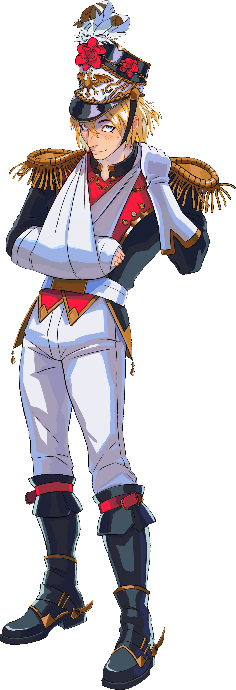
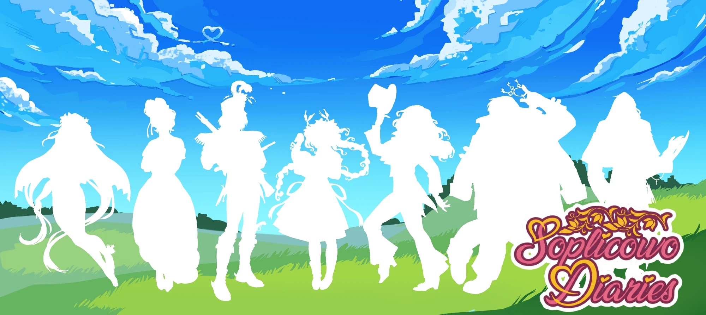
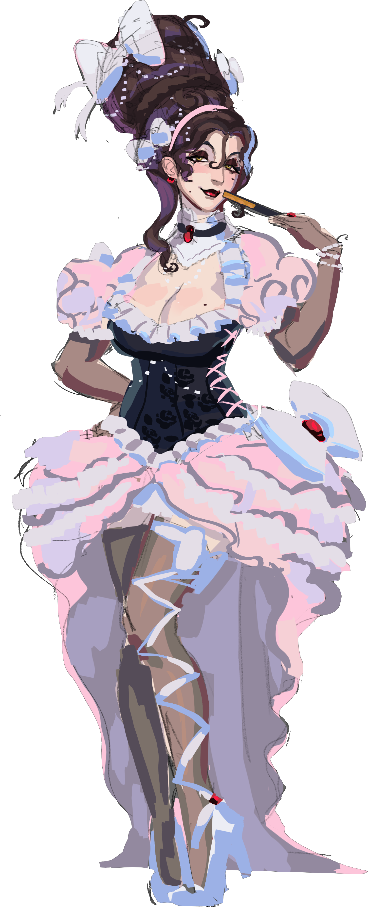
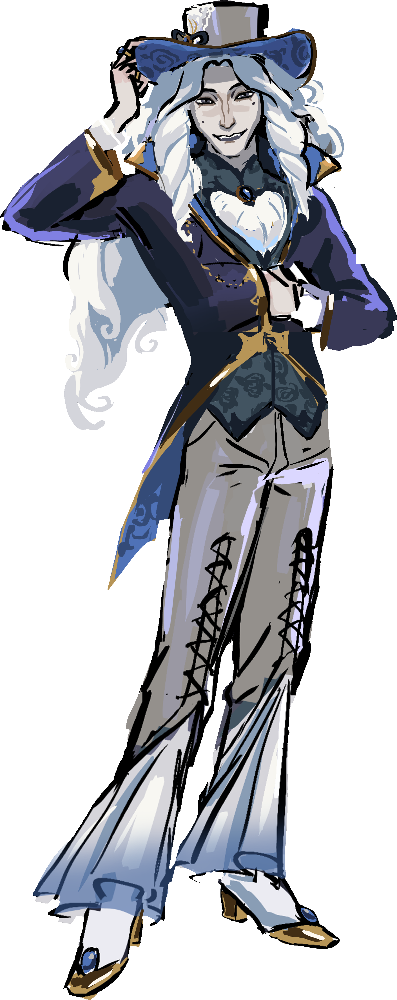

Character Sheet 01
Tadeusz — The Lost Romantic
A young, idealistic dreamer trying to navigate the complex social dynamics of Soplicowo manor.

Serving as Game Designer, Narrative Designer, and Writer, transforming a chronological literary classic into non-linear dating encounters.
The project began with extensive research into dating sims and analyzing adaptations of "Pan Tadeusz". The key was matching the fast-paced, chaotic nature of *Monster Prom* while structuring production through detailed design sheets.
Working on the project required rigorous asset management, tracking character poses, expressions, and dialogue branches within structured documentation.
Translating 19th-century epic characters into a modern dating sim while preserving their literary roots and injecting humor. Here are 3 key characters and their game archetypes:

A young, idealistic dreamer trying to navigate the complex social dynamics of Soplicowo manor.

A connoisseur of salon flirting and high-society games, treating every potential match as a strategic victory.

An eccentric artist obsessed with Gothic romance, beautiful landscapes, and dramatic romantic gestures.
The biggest narrative design challenge was converting a linear literary narrative into a flexible system of randomized dating sim encounters.
I designed a game loop system where players navigate key locations across the estate, breaking down book events into modular dating scenarios for high replayability.
"Non-linearity in historically rooted games requires abandoning strict chronology in favor of thematic matching—aligning the player's emotional state with the dynamics of the encounter."
*Note: Visual assets and UI elements shown in the gameplay are work in progress.
The video below showcases raw gameplay footage, comedic timing, and choice mechanics.
Gameplay and character interaction breakdown.